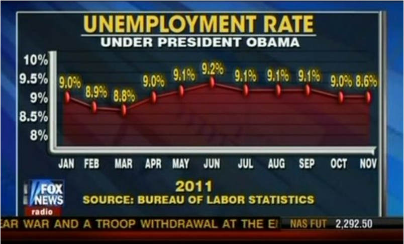
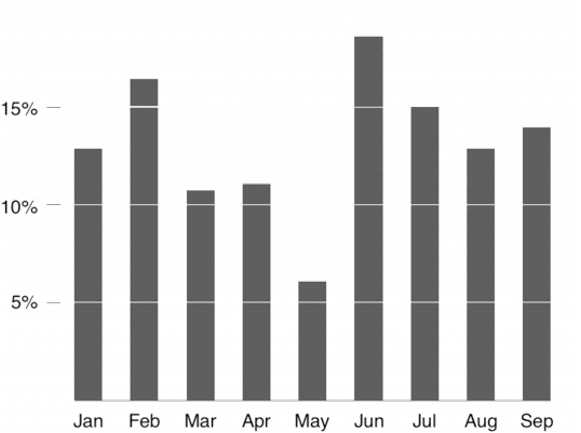
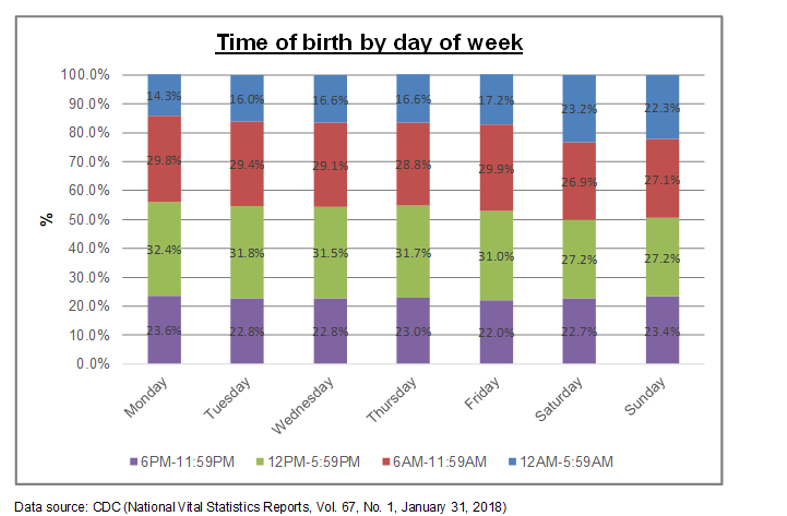
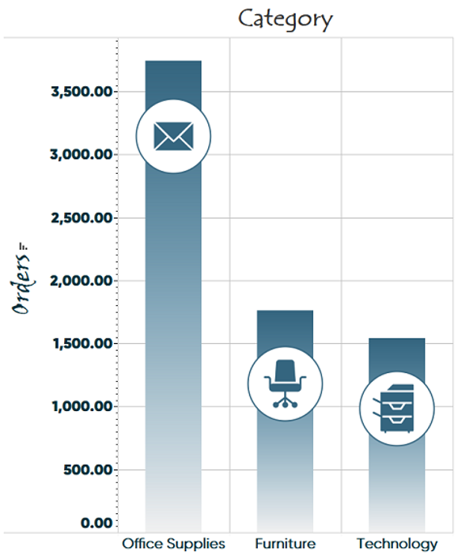
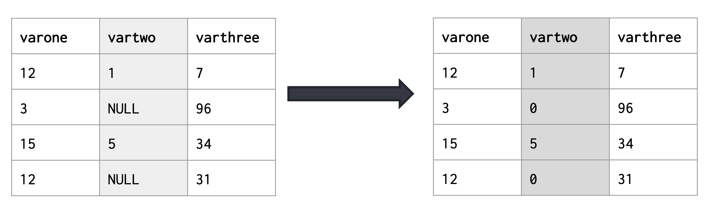
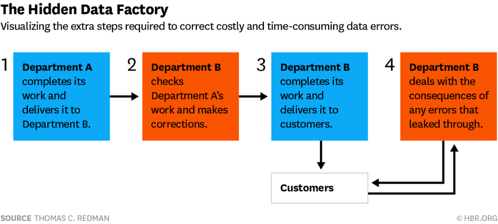

5. Lecture 4: SQL for vizualization¶
Gittu George, January 13 2022
5.1. Todays Agenda¶
Vizualization science
Steps on vizualization
SQL tricks for data prep
Views
Data Cleaning science
5.2. Learning objectives¶
You will understand what kinds of graphs are best applied to various “questions.”
You will understand how to construct SQL queries to pre-process data for efficient plotting
You will be able to work from question, to figure, to SQL query
Why Data Cleaning Matters
How to develop a data cleaning plan as part of a workflow
How to establish and understand data standards for various data types
How to encode data cleaning standards into a database structure
5.3. Introduction to visualization science¶
You will be doing many data visualization in this course for your assignments and projects. When you think about it, what are the first things that come to your mind?
There are so many different graphs out there; which one should I use?
There are so many different graphing tools out there; which one should I use?
Should my plot be static or dynamic?
Answers to these questions solely rely on the purpose of a graph ?? !!
In general, graphs should;
Make large datasets coherent
Serve a reasonably clear purpose
Be closely integrated with descriptions of the dataset
Induce the viewer to think about substance
5.3.1. General Principles for vizualization¶
Show the data (fairly)
Ensure that the data represented does not exaggerate or obscure true patterns.

{kind=link}
Maximize data-ink ratio
Elements in your figure should represent data, rather than adornment (grid lines &cetera)

{kind=link}
Erase non-data ink
As much as possible, reduce clutter around the data itself.

{kind=link}
Erase redundant data-ink
Remove (or deprioritize) data that doesn’t support the statements

{kind=link}
Edit your figures as you would your text
Ask, is this legible? Does this represent what we need it to show?
InkScape
CorelDRAW
AI
5.4. Steps on vizualization¶
By now, we understand the science of visualization, but you have to keep in mind that graphical display is more than graphs. Here are how the steps will look like, and here I will be showing some SQL tricks and techniques that you can use.
5.4.1. Data Preparation¶
What are we trying to plot?
More variables or facets within your data mean more visual variables.
Make clear choices about categorical vs. continuous variables.
Source : Bertin. 1967. Semiology of Graphics.
{kind=link}
We will be discussing later some of the SQL tricks.
Are we plotting the data only once or to be redrawn frequently? Is the data preparation complex?
We can manage longer processing times if things are plotted only once.
A complex query only needs to be run once. If data is updated often, or the plot must be regenerated often, we need other solutions.
And that’s why we want to know about views which we will discuss in detail later.
5.4.2. Reproducible Workflows¶
Considerations In Plotting Decisions
How much data are you trying to plot?
How many “series”?
Volume of Data
Static presentation
Dynamic presentation
Important
Simplify your data first.
Can we aggregate by type, count?
use GROUP BY
Do we need to prepare data ahead of time?
That’s WHY we need to create MATERIALIZED VIEW.
Is the data likely to change?
That’s WHY we need to create VIEW.
5.4.3. Visual Representation¶
What are we Representing? Here are the main categories
Numeric data
Univariate; Histogram, density plot: Count of observations.
Multivariate, n = 2; Scatter plots (x vs. y), bar plots (count of y at value x), boxplots (distribution of y at x)
Multivariate, n = 2; one variable ordered line graph (ordered x vs. y), connected scatterplot (ordered x vs. y) As n increases, we can use other graphic elements (hue, symbol shape & size) to represent other dimensions of the data
Categorical Data
Univariate (keyword list &cetera) Barplot (count of terms), word cloud (ugh); pie or donut chart (ugh)
Univariate, structured Dendrogram (hierarchy of relationships)
Categorical with Numeric Variations on numeric, using an extra facet
An amazing reference: data-to-viz
Represent data SIMPLY
More graphs, less clutter.
Less text on the screen (significant figures!!!!)
Highlight the key elements (use the alpha channel!)
{kind=link}
5.5. SQL tricks¶
These SQL tricks help with the data preparation for generating the plots.
Group continuous variable using CASE:
SELECT varone,
CASE WHEN vartwo < 5 THEN ‘Small’
WHEN vartwo < 10 THEN ‘Medium’
WHEN vartwo > 10 THEN ‘Big’
END,
varthree
FROM table;
{kind=link}
Dealing with missing values using COALESCE
SELECT varone,
COALESCE(vartwo, 0)
FROM table;
COALESCE is used to deal with potential NULL values. It saves you from dealing with it in Python & lets you clearly define how you deal with missing values.
{kind=link}
Changing plotting order:
SELECT varone,
vartwo,
varthree
FROM table
ORDER BY varone;
{kind=link}
Changing plotting order with random:
Using random() allows us to sort by a random value that is recalculated each time.
Changing order:
SELECT varone,
vartwo,
varthree
FROM table
ORDER BY random();
{kind=link}
5.6. Views¶
Whether we want to use VIEWS depends on the plotting or querying frequency. For example, complex queries with changing data that will be run multiple times (or have varying “WHERE” statements) can use a VIEW.
Check out how much time this query is taking to run. Before all that lets initiate the connection to the database.
import os
import psycopg2
##Make sure you import and load your .env file
from dotenv import load_dotenv
load_dotenv()
conString = {'host':os.environ.get('DB_HOST'),
'dbname':os.environ.get('DB_NAME'),
'user':os.environ.get('DB_USER'),
'password':os.environ.get('DB_PASS'),
'port':os.environ.get('DB_PORT')}
print(conString["port"])
conn = psycopg2.connect(**conString)
cur = conn.cursor()
%%time
query="""SELECT tw.id,
unnest(regexp_matches(tw.text, '\$[A-Z]+\M', 'g')) AS substring
FROM import.tweets AS tw;"""
cur.execute(query)
cur.fetchmany(5)
Let’s create a view
%%time
query="""CREATE OR REPLACE VIEW import.tickertweets AS
SELECT tw.id, unnest(regexp_matches(tw.text, '\$[A-Z]+\M', 'g')) AS substring
FROM import.tweets AS tw;"""
cur.execute(query)
conn.commit()
Let’s see the query time when we call it from the VIEW.
%%time
query="""SELECT * FROM import.tickertweets;"""
cur.execute(query)
cur.fetchmany(5)
So, a TABLE is stored data. A VIEW is a stored query. A VIEW’s query is stored to be cached (saved to memory) for faster retrieval and optimized for speed.
Complex queries with fixed data that will be run multiple times (or have varying “WHERE” statement) can use a MATERIALIZED VIEW:
%%time
query="""DROP MATERIALIZED VIEW import.tickertweetsmat CASCADE;"""
cur.execute(query)
conn.commit()
%%time
query="""CREATE MATERIALIZED VIEW import.tickertweetsmat AS
SELECT tw.id,
unnest(regexp_matches(tw.text, '\$[A-Z]+\M', 'g')) AS substring
FROM import.tweets AS tw;"""
cur.execute(query)
conn.commit()
Let’s see the query time when we call it from the VIEW.
%%time
query="""SELECT * FROM import.tickertweetsmat;"""
cur.execute(query)
cur.fetchmany(5)
A TABLE is stored data.
A VIEW is a stored query.
A MATERIALIZED VIEW is a query committed to stored data.
When to use what?
Choose a table when the underlying data don’t change (except for INSERTs)
Choose a MATERIALIZED VIEW when the query is slow, and you can tolerate some lag between UPDATE/INSERTs and updated values.
Choose a VIEW when you reuse the query and want to simplify calling it.
Check out these yourself?
How much time does it take to create a view vs. materialized view?
How much time does it take to query? You can use these queries to find that out.
How much space does it take? You can use these queries to find that out.
%%time
query="""SELECT pg_size_pretty (pg_relation_size('import.tickertweets'));"""
cur.execute(query)
print(cur.fetchone())
query="""SELECT pg_size_pretty (pg_relation_size('import.tickertweetsmat'));"""
cur.execute(query)
print(cur.fetchone())
5.6.1. Summary¶
Views can be an important tool in managing long-running queries for visualization (and for other purposes)
Tradeoffs exist with respect to storage space and the rate at which data needs to be refreshed.
Table |
View |
Materialized View |
SELECT Query |
|---|---|---|---|
High Disk Space |
Low Disk Space |
High Disk Space |
Low Disk Space |
Fast Read Time |
Slower Read Time |
Fast Read Time |
Slow Read Time |
Fixed Values (cannot be refreshed) |
Can be refreshed |
Can be refreshed |
Always refreshed |
{kind=link}
5.7. Data Cleaning¶
Before we get to visualization or the table, we need to think about data cleaning. This is considered very important yet tedious, where analysts spend most of their time.
5.7.1. Why Does Clean Data Matter?¶
Dirty data impacts every part of business decision-making. Outliers, data gaps, misspellings, poorly structured data, incorrectly entered, invalid values, duplication.
Garbage in - Garbage out
If you put dirty data in, then what you will be getting, as a result, will be dirty or of no use, or even worse, it can mislead you.
Time is money
Suppose your data issues get addressed at the point when the data is initially consumed. In that case, there is a meager cost associated with it, but once data gets dispersed throughout the company with different project groups, it becomes harder to address as you want to bring this change across all departments. Then once you’ve started to make strategic decisions based on this data, it becomes very expensive to correct the data as you also want to deal with the consequences of bad strategy decisions.
5.7.2. Impacts with the dirty data¶
It can be broadly categorized into
Operational
Customer service impacts (mismatched addresses)
More costly to analyze data and produce insights
Strategic
More difficult to set & execute a broad strategy
More challenging to align needs in large organizations
5.7.3. Where Does Dirty Data Come From & how to approach?¶
It can come from anywhere. So don’t just think that it had to do with the external data; sometimes, internal data that has been provided to you might be dirtier.
{kind=link}
Note
Data Screening deals with finding errors (generally at data input or analysis) Data Cleaning fixes errors, reformats data following data acquisition.
Data Cleaning means having a plan
Any analysis you do will use some combination of internal and external data
You can expect that “finding”, “screening,” and “cleaning” data will take close to a majority of your time
You can expect that to costs of poor data management and cleaning can be significant in time and value
Beginning with a Data Cleaning Plan is perhaps the most critical stage of analysis.
5.7.4. Elements of a Data Cleaning Plan¶
5.7.4.1. Dataset Provenance Metadata¶
Assume you are a consumer and producer
For Each Dataset (dataset level metadata):
Title
URI (source location
Keywords (if needed)
Publication Date
Publisher
Creator
Contact Point
Spatial Coverage
Temporal Coverage
Language
Date & Time Formats
Data Version
Access Date
It can be formatted as plain text, YAML, JSON, or other W3C Data on the Web: link
5.7.4.2. Data Quality Documentation (pre-cleaning)¶
Completeness per row
Do we have all the data we need in each table?
Syntactical Correctness
Are all data in the expected & correct format?
Absence of Contradictions
All data are in alignment with one another & with expectations.
Accuracy
All data is up to date and accurate.
Absence of repetition
Synonyms & overlapping values addressed; all entities unique Overlapping values & synonyms addressed; each entity is unique
Referential Integrity
Required references and entities are complete.
Completeness
All cross-sum products are complete (sum of product counts == total inventory count)
Normative consistency
The naming and meaning of data is the same overall systems
5.7.4.3. Data Cleaning Documentation¶
All steps (and the order of steps) should be preserved and documented.
All steps should be reproducible (within reason)
Reproducibility either directly (by executing a script directly) or indirectly (explaining the steps in a program)
5.7.4.4. Data Quality Documentation (post-cleaning)¶
5.7.4.5. Quality Assessment / Error Reporting Procedures¶
Clear documentation of quality assessment metrics (as above)
Clear documentation of how to report/address data issues.
5.7.5. Data Standards for Databases¶
W3 standards for dates, Blog post about the most recent ISO 8601 standard update
April 2, 1974
04-02-74
04/02/1974
4/2/74
19740402
04021974 - is this April 2 or February 4?
2 April 1974
-
Don’t think people have one name
Don’t think people’s names do not change
Don’t think people’s names have canonical order (First, Last)
Provide clear meaning for data elements
Either separately or within the database (COMMENT ON …)
COMMENT ON TABLE mytable IS 'This table is the table for my data.';
COMMENT ON COLUMN my_table.my_column IS 'Employee ID number';